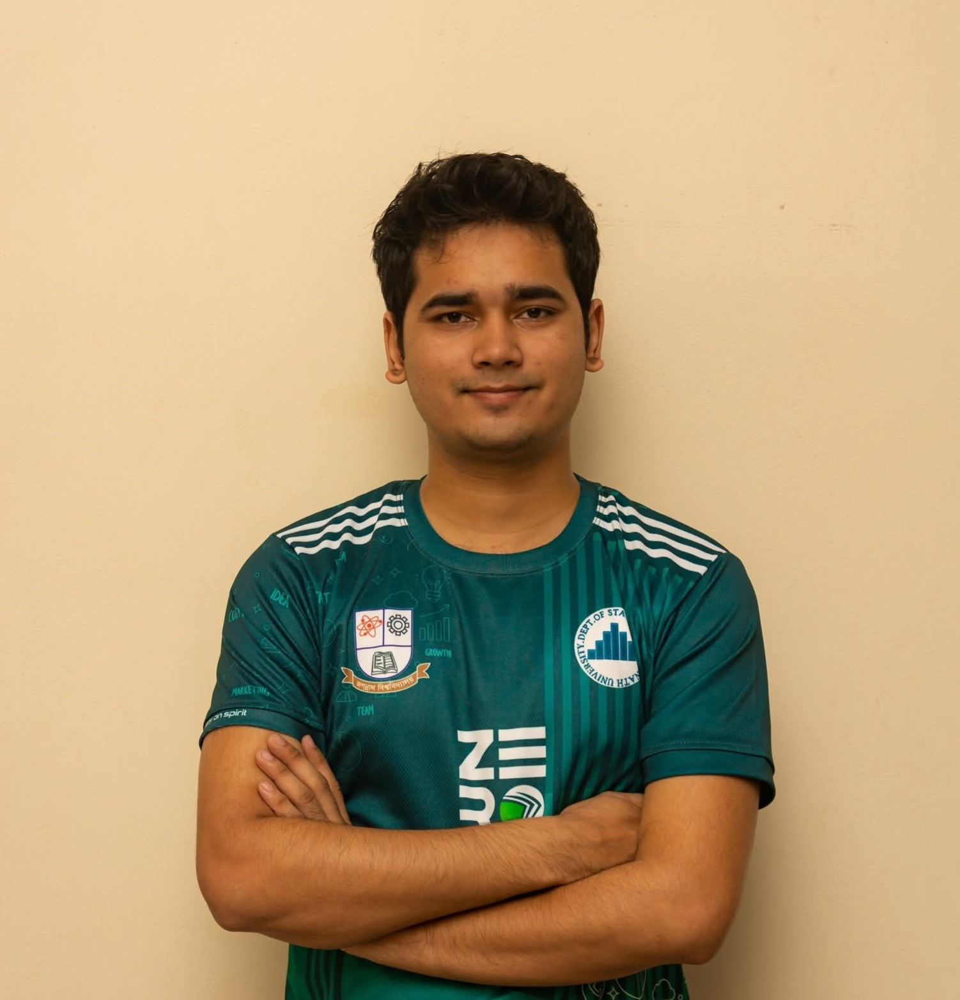

Advancing
Research &
Innovation
Empowering researchers, students, and professionals with world-class training, consultation, and support across the full research lifecycle.
Research Papers
Active Projects
Conferences
Researchers Trained
Evidence-Based
Research
What We Strive For
ARI is committed to building a research-driven society through accessible education and professional development.
Promote Research Culture
Foster a culture of inquiry among students and young researchers across Bangladesh.
Accessible Education
Make research education available to all levels—from beginners to advanced scholars.
Collaboration Network
Build a strong national and international research collaboration network.
Innovation & Evidence
Encourage innovation and evidence-based thinking in academic and professional settings.
Publication Support
Support researchers in publishing papers and participating in conferences.
Skills Development
Develop practical skills in data analysis, methodology, and research tools.
Featured Services
From consultation to publication, ARI supports every stage of your research journey.
Research Consultation
Data Analysis Support
Paper Writing Help
Thesis Guidance
Statistical Analysis
Publication Support
Training & Workshops
Structured programs designed to elevate your research competency.
IBM SPSS & Research-Ready Data Analysis
Comprehensive training on SPSS for academic and professional research.
Learn moreAcademic Writing Workshop
Improve research writing, structure, and publication readiness.
Learn moreIntroduction to R for Data Analysis
Statistical computing and data visualization with R.
Learn moreLatest News & Notices
About ARI
Established in 2023 to champion research culture, innovation, and evidence-based thinking across Bangladesh.
Building a Research-Driven Society
Advanced Research and Innovation (ARI) was founded in 2023 by a passionate group of researchers committed to making research knowledge accessible to all. We support researchers throughout the entire research lifecycle—from idea generation, proposal development, data collection, analysis, report writing, publication, and presentation.
ARI focuses on making research education practical, impactful, and accessible to university students, teachers, doctors, thesis students, and professional researchers across Bangladesh and beyond.
Est. 2023
Advanced Research & Innovation
Vision
To build a research-driven society where knowledge, innovation, and evidence-based decision-making are widely practiced.
Mission
To provide accessible research training, consultation, and professional support that empowers individuals to conduct high-quality research.
What ARI Aims to Achieve
How We Achieve Our Goals
Structured research training from beginner to advanced level
Organize workshops, seminars, and academic events
Offer research consultation and mentorship services
Assist in thesis, dissertation, and journal publication
Support data analysis using SPSS, R, Stata, and Python
Help in survey design, report writing, and statistical analysis
Facilitate internships and research assistant opportunities
Develop future researchers through hands-on learning
Founders of ARI
Click on any founder to learn more about their background and connect with them professionally.

RRMd. Rukonuzzaman Rukon
Co-FounderDedicated to advancing research methodology and knowledge dissemination.
Md. Ador Hossain
Co-FounderCommitted to making research training accessible and impactful.
Samrat Kumar Dev Sharma
Co-FounderPassionate about data analysis and evidence-based research practices.
Futanta Chakma
Co-FounderFocused on promoting research culture among diverse communities.
Mahmud Hossain
Co-FounderDedicated to building research networks and academic collaborations.
Research Interns
Talented individuals contributing to ARI's mission through dedicated research assistance and project support.
Tasneem Ahmed
Research Assistant InternSupporting data collection and analysis for ongoing research projects.
Rafiqul Hasan
Content & Publication InternAssisting in academic writing, editing, and publication preparation.
Nusrat Islam
Survey & Methodology InternDesigning survey instruments and supporting research methodology development.
Sabbir Biswas
Training Support InternCoordinating training programs and providing participant support during workshops.
Maliha Rahman
Research Coordination InternCoordinating cross-team research activities and project documentation.
Karim Al-Amin
Digital & Outreach InternManaging digital communications and research outreach initiatives for ARI.
Academic Programs & Bootcamps
Equip yourself with hands-on command over leading research suites, reference architectures, and scientific publication paradigms.
IBM SPSS & Research-Ready Data Analysis
Master SPSS for academic and professional data analysis. Covers descriptive statistics, inferential tests, regression, and complete data workflows.
Data Analysis with Stata
Comprehensive Stata training for econometric and social science research methodology with panel data and time series focus.
Introduction to R for Data Analysis
Learn statistical computing and data visualization with R from fundamentals to advanced modeling techniques.
Zotero & Mendeley Referencing
Professional reference management for researchers, thesis students, and academics working on publications.
Research Methodology Workshop
Deep dive into qualitative, quantitative, and mixed-methods research design for academic excellence and publication readiness.
Data Analysis Workshop
Hands-on workshop covering data cleaning, analysis pipelines, visualization techniques, and interpretation of results.
Academic Writing Workshop
Enhance research writing skills — structure, clarity, literature review, citation, and publication readiness for international journals.
Beginner Research Fundamentals
Start from zero — understand research concepts, types, ethics, and the complete lifecycle of academic research.
Intermediate Research Methods
Survey design, sampling, data collection strategies, and comprehensive literature review techniques for academic projects.
Advanced Research & Publication
Journal submission, peer review, conference presentations, impact metrics, and navigating the academic publishing landscape.
Can't find what you need?
ARI creates custom training programs tailored to your institution's specific needs.
Projects & Publications
Explore our ongoing real-world grassroots investigations, statistical models, and collaborative peer-reviewed scholarly work.
Research Projects Archive
Real-world interventions driven by the ARI core execution force.
Research Culture Development in Bangladeshi Universities
A multi-institutional study on research participation rates, barriers, and motivators among undergraduate students across Bangladesh.
Digital Tools for Academic Research: Adoption & Impact
Evaluating the adoption of digital research tools (Zotero, SPSS, R) among Bangladeshi academics and measuring effectiveness.
Evidence-Based Practice in Healthcare Settings
Assessment of evidence-based practice adoption among healthcare professionals in clinical and community health settings.
Scholarly Publications Library
Peer-reviewed literature originating directly from ARI mentorship frameworks.
Promoting Research Culture: Challenges and Strategies for Bangladeshi Universities
Evidence-Based Research Practices in Healthcare: A Systematic Review
Our Services
Comprehensive research support from consultation to publication.
Research Consultation
One-on-one expert consultation to define, refine, and plan your research project from conception to completion.
Data Analysis Support
End-to-end data analysis support using SPSS, R, Stata, and Python for academic and professional research.
Research Paper Writing Help
Professional guidance on structuring, writing, and editing research papers for journal submission.
Thesis & Dissertation Guidance
Comprehensive support for thesis and dissertation projects—from proposal to final defense.
Statistical Analysis
Advanced statistical analysis, interpretation, and reporting for quantitative research projects.
SPSS / R / Stata Support
Hands-on tool support and training sessions tailored to your specific software needs.
Report Writing Assistance
Expert assistance in drafting, structuring, and polishing academic and research reports.
Publication Support
Guide researchers through the journal selection, submission, and revision process.
Survey Design & Methodology
Design effective surveys, questionnaires, and research instruments with proper validity and reliability checks.
Academic Mentorship
Ongoing mentorship for early-career researchers navigating academia and professional research.
Research Training Programs
Structured group training programs from beginner to advanced levels across multiple research domains.
NGO Research Projects
End-to-end research support for NGOs and development organizations — needs assessments, baseline surveys, impact evaluations, and policy briefs tailored to your mission and donor reporting requirements.
Need a specific service?
Get in touch with us and we'll create a tailored solution for your research needs.
research.ari.bd@gmail.comMedia, Blog & Gallery
Stay up-to-date with recent announcements, read our academic methodology blog posts, and view event snapshots.
Research Blog & Insights
Expert perspectives on research methodology, tools, and academic writing.
10 Essential Steps to Writing a Strong Research Proposal
A comprehensive guide to structuring your research proposal for maximum impact and approval success.
Why SPSS Remains Essential for Social Science Research
Exploring the enduring relevance of SPSS in academic research and why researchers should master it.
How to Choose the Right Journal for Your Research Paper
A strategic guide to selecting the best-fit journal for publishing your academic research work.
Recent News Updates
Latest activities and developments at ARI.
ARI Launches New Research Training Cycle
A new cycle of structured research training programs has been announced for June–August 2025, covering SPSS, R, Stata, and academic writing for university students and professionals across Bangladesh.
ARI Expands Publication Support Program
ARI has expanded its publication support services to include end-to-end journal submission assistance for Scopus and ISI-indexed journals, with free initial consultation for eligible researchers.
New Cohort of Research Interns Joins ARI
ARI welcomed a new cohort of dedicated research interns joining the team in data analysis, publication support, methodology, and outreach roles for the 2025 academic year.
ARI Researchers Present at International Conference
ARI co-founders and researchers presented findings on research capacity building and digital tool adoption at an international research methods conference, receiving positive academic recognition.
Official Notice Board
Active announcements and official communications from ARI.
New Batch: IBM SPSS Training — Registration Open
A new batch of IBM SPSS & Research-Ready Data Analysis training is now accepting registrations. Limited seats available. Certificate provided upon completion.
Academic Writing Workshop — 3-Day Intensive Program
ARI's comprehensive Academic Writing Workshop is scheduled for June 2025. The program covers structure, citation, literature review, and publication readiness.
ARI Internship Applications Open
Research assistant positions are now open for motivated students and early-career researchers. Applications accepted via email with CV and cover letter.
Publication Support Drive — Free Initial Consultation
ARI is offering free initial consultation sessions for researchers seeking guidance on journal submission, manuscript formatting, and peer review response.
R Programming Workshop — Beginner-Friendly, Certificate Provided
An R Programming Workshop for data analysis has been scheduled for March 2025. No prior programming experience required. Participation certificate awarded to all attendees.
ARI Snapshot Gallery
Moments captured from our training sessions, workshops, and academic events.


Contact ARI
Have a question or want to collaborate? We'd love to hear from you.
Let's Connect
Whether you're a student, researcher, or institution looking to collaborate, ARI is here to support your research journey.
Email Us
research.ari.bd@gmail.comLocation
Level 8, Noakhali Tower
Noakhali, Bangladesh
Response Time
Within 24–48 hours
Send Us a Message
We respond within 24–48 hours
Having trouble? Email us at research.ari.bd@gmail.com
Our Location
Level 8, Noakhali Tower, Noakhali — serving researchers across Bangladesh and beyond.